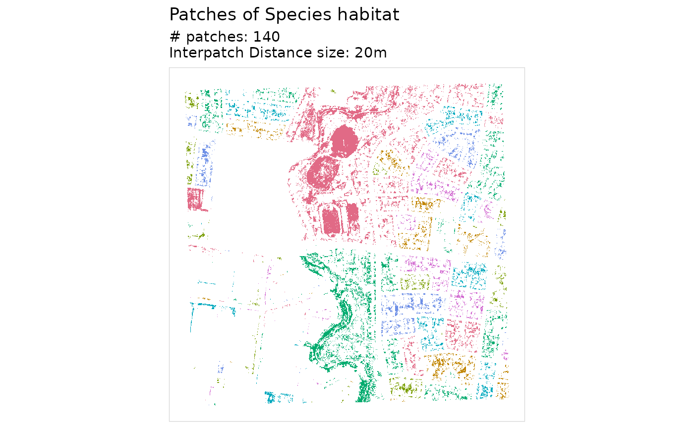
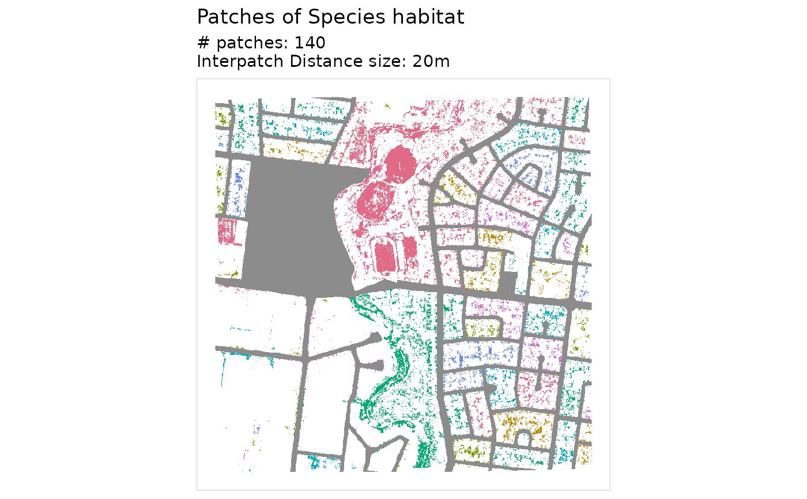
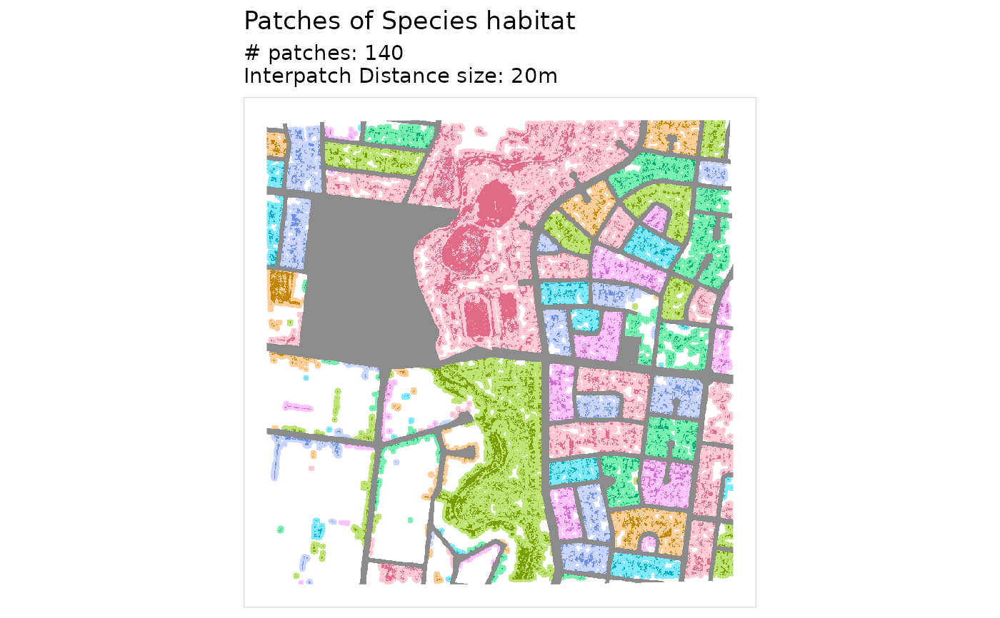
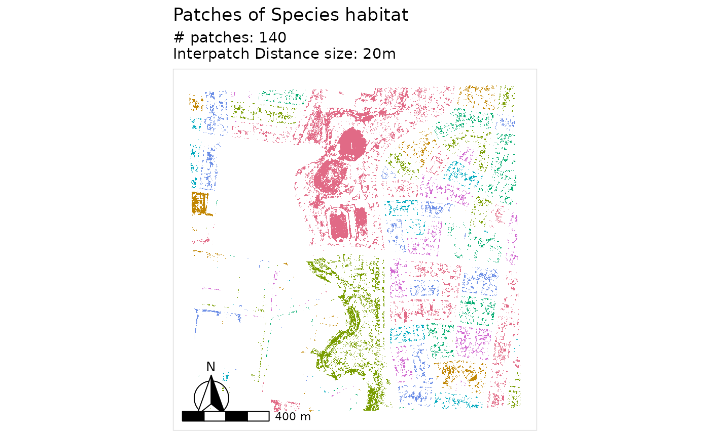

Visualizes habitat patches colored by their connected fragment ID.
Usage
plot_patches(
patch_id,
interpatch_distance,
species = "Species",
n_cols = 7,
barrier = NULL,
buffered = NULL,
directions = 4
)Arguments
- patch_id
Terra SpatRaster. Raster with patch IDs.
- interpatch_distance
Numeric. The distance (in meters) where habitat patches are considered connected. E.g., if set to 500, patches 498m apart are connected, those 501m apart are not connected. This is passed internally to a spatial operation known as "buffering", where this distance is used as a radius from the edge of the habitat zone. This means the specified
interpatch_distanceis halved exactly. So an interpatch distance of 500 will be converted to 250.- species
Character. Species name (default: "Species").
- n_cols
Integer. Number of colors to cycle through (default: 7).
- barrier
Terra SpatRaster, optional. The barrier layer the patches were found with, 1 where there is a barrier.
- buffered
Terra SpatRaster, optional. Needs
barrier. The buffered habitat the patches were found with, fromhabitat_connectivity_full().- directions
Which neighbouring cells join, as in
habitat_connectivity():4, the default, or8. Used withbufferedto find the zones, so give it the value the patches were found with.
Details
With barrier, the barrier is drawn in grey. With buffered as well, each
patch's connecting zone, the buffered habitat cut by the barrier that joins
it into one patch, is shaded a paler version of its colour. Buffer cut off
from all habitat joins no patch, so it is left blank.
Examples
lizard_habitat <- example_habitat()
lizard_barrier <- example_barrier()
interpatch_distance <- 20
buffer_radius <- interpatch_distance / 2
buffered_habitat <- habitat_buffer(lizard_habitat, buffer_radius)
barrier_mask <- create_barrier_mask(lizard_barrier)
fragmented <- fragment_habitat(buffered_habitat, barrier_mask)
remaining_habitat <- drop_habitat_under_barrier(
habitat = lizard_habitat,
barrier = lizard_barrier
)
fragment_patches <- assign_patches_to_fragments(
remaining_habitat = remaining_habitat,
fragment = fragmented
) |> add_patch_area()
plot_patches(
patch_id = fragment_patches,
interpatch_distance = interpatch_distance
)
#> <SpatRaster> resampled to 500554 cells.

# with the barrier
plot_patches(
fragment_patches,
interpatch_distance,
barrier = lizard_barrier
)
#> <SpatRaster> resampled to 500554 cells.

# with the barrier, and each patch's connecting zone shaded
plot_patches(
fragment_patches,
interpatch_distance,
barrier = lizard_barrier,
buffered = buffered_habitat
)
#> <SpatRaster> resampled to 500554 cells.

#' add north arrow and scale bar with ggspatial
library(ggspatial)
library(tidyterra)
plot_patches(fragment_patches, interpatch_distance = interpatch_distance) +
annotation_north_arrow(
style = north_arrow_fancy_orienteering()
) +
annotation_scale()
#> <SpatRaster> resampled to 500554 cells.
